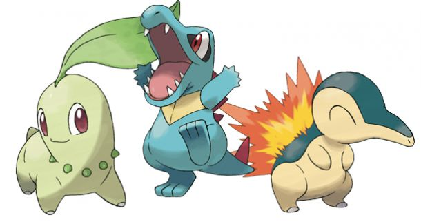
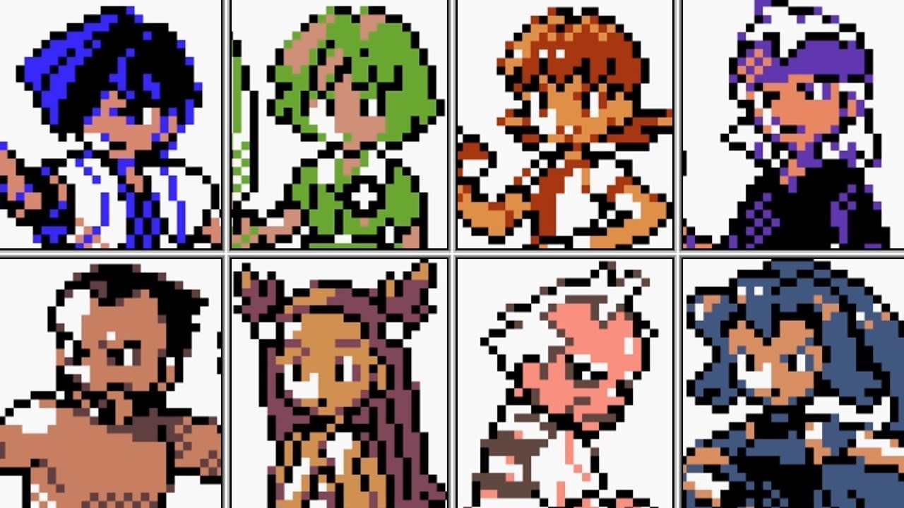
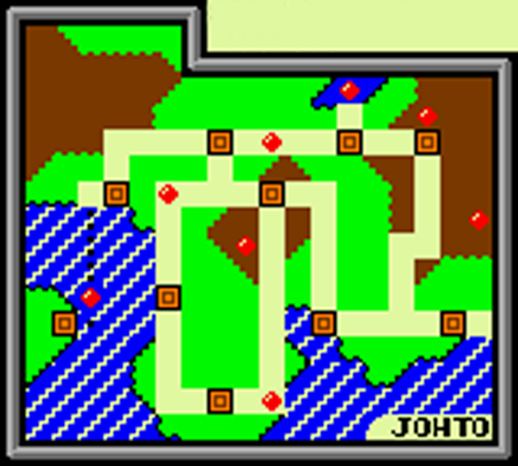
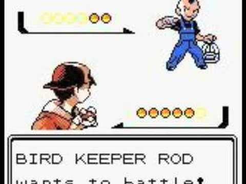

Pokemon Gold/Silver/Crystal
Historia
Na nova região o jogador começa em New Bark Town, onde o prof. Elm lhe entrega um Chikorita, Cyndaquil ou Totodile e segue em busca do Mr. Pokémon para pegar um ovo misterioso com ele. Quanto ao ovo, é entregue ao prof. Elm e ele pede para seguir uma jornada em busca das oito insígnias de ginásio, para completar a Pokédex de Johto e para poder entrar na Liga Pokémon. Após a vitória sobre a Elite 4, é permitido ao jogador explorar Kanto, a região onde se passaram os jogos anteriores. Derrotando todos os ginásios antigos e conseguindo mais oito insígnias, é hora do confronto final no Mt. Silver com Red, o protagonista de Red, Blue e Yellow
Iniciais
Em todos os jogos de Pokemon o jogador tem a possibilidade de escolher entre 3 Pokemon inicial. Nesses jogos os iniciais são, Cyndaquil(Fogo), (Água), Bulbasaur(Grama).
Ginásios
No jogo, você pode enfrentar 8 lideres de Ginásio diferentes, ao ganhar do lider, você recebe a insignia daquele ginásio, ao coletar as 8 insignieas você ganha o direito de enfrentar a Elite 4.
Região
O jogo se passa na região de Johto
Batalhas
Nas batalhas presentes no jogo, são apresentadas 4 opções, Lutar, Troca de Pokemon, Utilizar um item e Correr o objetivo básico é utilizar as habilidades de seu Pokemon para derrotar o inimigo.